Vampire Survivors

뱀파이어 서바이버즈 Vampire Survivors | |
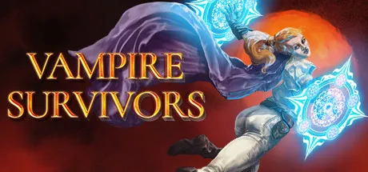 | |
개발·유통 | poncle |
플랫폼 | |
ESD | Steam | STOVE | itch.io | Microsoft Store(Xbox PC 앱)[2] | Google Play | App Store | 닌텐도 e숍 | PlayStation Store |
장르 | |
출시 | PC[3] 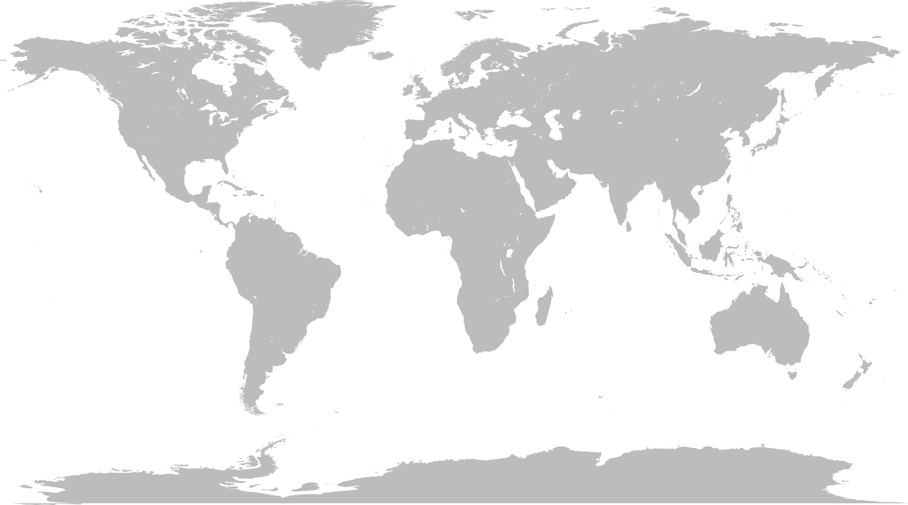 2022년 10월 20일Xbox 2022년 11월 10일 Android / iOS 2022년 12월 9일 Nintendo Switch 2023년 8월 17일 PlayStation 2024년 8월 29일 |
엔진 | |
한국어 지원 | 지원 |
플레이 인원 | 1~4인[5] |
심의 등급 | |
해외 등급 | |
공식 사이트 | |
상점 페이지 | |


1. 개요
퐁클(poncle)[6]이 Steam에 2022년 10월 20일[7] 정식 발매한 인디 로그라이트 탑뷰 슈터 게임. 2021년 12월 17일에 앞서 해보기로 출시하였고 2022년 12월 9일 안드로이드/iOS판도 발매되었다. 뱀서라이크 장르의 가장 대표적인 게임.[8] 조작은 마우스, 이동키(WASD키, 방향키, 게임패드스틱 등)로 이동 조작만 하면 되고 공격은 자동으로 이뤄진다.
수많은 어둠의 피조물을 쓰러뜨리며 새벽이 올 때까지 생존하세요! Vampire Survivors는 로그라이트 요소를 갖춘 고딕 호러 케주얼 게임입니다. 당신의 선택으로 순식간에 수백 마리의 괴물이 눈덩이처럼 불어날 수 있죠.Mow thousands of night creatures and survive until dawn! Vampire Survivors is a gothic horror casual game with rogue-lite elements, where your choices can allow you to quickly snowball against the hundreds of monsters that get thrown at you.
2. 발매 및 패치
최초 버전은 1인 개발게임으로 JavaScript언어로 HTML5 Phaser 플랫폼 기반으로 개발되었다.
베타 버전을 설치하고 싶으면 스팀에 들어가서 게임 속성에서 Public Beta로 바꿔주면 된다.#1 일반 버전으로의 롤백 역시 가능하며, 세이브 데이터는 베타로 게임하든 일반 버전으로 게임하든 서로 연동되므로, 자유롭게 버전을 이동할 수 있다.
이에 대해 제작사는 2022년 여름까지 게임에 업계 표준 엔진을 적용할 것임을 예고했다. 이 새로운 엔진에서는 기존 대비 10배의 성능 향상을 기대할 수 있으며, 스팀덱을 완벽히 지원할 것이라고 한다. 덤으로 모바일 버전도 출시할 것이라고 밝혔다. Development Roadmap Overview, v.0.10.0 이후 Roadmap
v0.4 이후 물리 연산을 줄이고 프레임을 상승시키는 "퍼포먼스 모드" 게임 옵션이 추가되어, 저사양 환경에서도 상당한 프레임 상승 효과를 볼 수 있다. 다만 이후 패치로 게임에 새로운 기능들이 다수 업데이트되면서 고사양 환경에 퍼포먼스 모드를 키더라도 렉이 발생하는 경우가 늘어난 편이며, 새로운 엔진 적용은 2022년 연말을 목표로 작업 중이라고 한다.
2023년 2월, 유니티 엔진을 적용한 새로운 PC판 Beta v1.3.201 가 공개되었다. 게임 엔진을 새롭게 변경하여 게임 사양이 크게 개선되어 특히 백그라운드에서 실행할 때 크게 느려지지 않는다. 새로운 엔진을 적용한 게임이 안정화될 때까지 몇 달 동안 JavaScript 버전과 병행해서 콘텐츠를 제공할 계획이다. 스팀 라이브러리에서 베타 억세스 코드를 "newenginepls" 입력하면 새로운 엔진을 적용할 수 있다. #베타 참여법
2025년 4월, 크로스 플랫폼 세이브를 지원하면서 스팀이나 콘솔, 모바일에서 동일한 세이브로 즐길 수 있게 되었다. [9] DLC는 플랫폼별로 각각 구입해야 한다. [10]
베타 버전을 설치하고 싶으면 스팀에 들어가서 게임 속성에서 Public Beta로 바꿔주면 된다.#1 일반 버전으로의 롤백 역시 가능하며, 세이브 데이터는 베타로 게임하든 일반 버전으로 게임하든 서로 연동되므로, 자유롭게 버전을 이동할 수 있다.
이에 대해 제작사는 2022년 여름까지 게임에 업계 표준 엔진을 적용할 것임을 예고했다. 이 새로운 엔진에서는 기존 대비 10배의 성능 향상을 기대할 수 있으며, 스팀덱을 완벽히 지원할 것이라고 한다. 덤으로 모바일 버전도 출시할 것이라고 밝혔다. Development Roadmap Overview, v.0.10.0 이후 Roadmap
v0.4 이후 물리 연산을 줄이고 프레임을 상승시키는 "퍼포먼스 모드" 게임 옵션이 추가되어, 저사양 환경에서도 상당한 프레임 상승 효과를 볼 수 있다. 다만 이후 패치로 게임에 새로운 기능들이 다수 업데이트되면서 고사양 환경에 퍼포먼스 모드를 키더라도 렉이 발생하는 경우가 늘어난 편이며, 새로운 엔진 적용은 2022년 연말을 목표로 작업 중이라고 한다.
2023년 2월, 유니티 엔진을 적용한 새로운 PC판 Beta v1.3.201 가 공개되었다. 게임 엔진을 새롭게 변경하여 게임 사양이 크게 개선되어 특히 백그라운드에서 실행할 때 크게 느려지지 않는다. 새로운 엔진을 적용한 게임이 안정화될 때까지 몇 달 동안 JavaScript 버전과 병행해서 콘텐츠를 제공할 계획이다. 스팀 라이브러리에서 베타 억세스 코드를 "newenginepls" 입력하면 새로운 엔진을 적용할 수 있다. #베타 참여법
2025년 4월, 크로스 플랫폼 세이브를 지원하면서 스팀이나 콘솔, 모바일에서 동일한 세이브로 즐길 수 있게 되었다. [9] DLC는 플랫폼별로 각각 구입해야 한다. [10]
3. 시스템 요구 사항
시스템 요구 사항 | |
구분 | 최소 사양 |
Windows, Mac OS, Android, iOS/iPadOS | |
운영체제 | Windows 7, iOS/iPadOS 11.0, Android 7.0 |
프로세서 | Intel Pentium 4 processor |
메모리 | 1 GB RAM |
저장 공간 | 400 MB 사용 가능 공간 |
도트 그래픽 게임이라는 점이나 시스템 요구 사양만 보면 매우 낮은 저사양 게임이지만 20분 후반대로 진입하면 프레임이 자비없이 바닥을 긴다. GTX 960급과 스팀덱에서 10프레임대까지 낮아지는 것은 물론, RTX 3080 같은 최상위 그래픽 카드도 7~80프레임을 겨우 유지할 정도. 그 이유는 해당 게임이 JavaScript로 제작된 HTML5 기반 게임인 탓에[11] 현 CPU들의 다중 코어를 제대로 사용하지 못하기 때문이다.
유니티 엔진 베타 테스트 버전을 설치하면 사양이 크게 개선된다. 참여법은 상단 문서 참조.
유니티 엔진 베타 테스트 버전을 설치하면 사양이 크게 개선된다. 참여법은 상단 문서 참조.
4. 트레일러
5. 스토리
6. 게임 정보
 자세한 내용은 Vampire Survivors/캐릭터 문서를 참고하십시오.
자세한 내용은 Vampire Survivors/캐릭터 문서를 참고하십시오.6.2. 능력치·강화
자세한 내용은 Vampire Survivors/능력치 문서를 참고하십시오.6.2.2. 강화
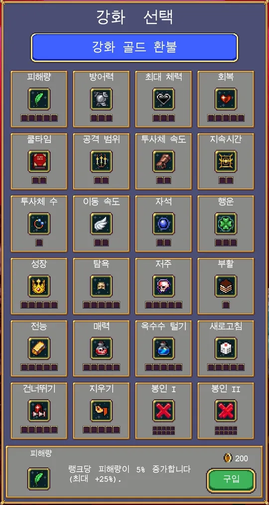 |
- 통상 강화
조건 없이 시작부터 해금되어 있는 강화들이다.- 피해량(Might): 랭크당 피해량 +5%, 최대 +25%
- 방어력(Armor): 랭크당 방어력 +1, 최대 +3
- 최대 체력(Max Health): 랭크당 최대 체력 +10%, 최대 +30%
- 회복(Recovery): 랭크당 회복 +0.1, 최대 +0.5
- 쿨타임(Cooldown): 랭크당 무기 쿨타임 -2.5%, 최대 -5%
- 공격 범위(Area): 랭크당 공격 범위 +5%, 최대 +10%
- 투사체 속도(Speed): 랭크당 투사체 속도 +10%, 최대 +20%
- 지속시간(Duration): 랭크당 무기 지속시간 +15%, 최대 +30%
- 투사체 수(Amount): 랭크당 투사체 수 +1
- 이동 속도(Move Speed): 랭크당 이동 속도 +5%, 최대 +10%
- 자석(Magnet): 랭크당 아이템 획득 범위 +25%, 최대 +50%
- 행운(Luck): 랭크당 행운 +10%, 최대 +30%
- 성장(Growth): 랭크당 경험치 획득량 +3%, 최대 +15%
- 탐욕(Greed): 랭크당 탐욕 +10%, 최대 +50%
- 저주(Curse): 랭크당 적들의 속도, 체력, 개체 수, 스폰율 +10%, 최대 +50%
- 부활(Revival): 랭크당 부활 횟수 +1
- 조건 만족시 해금
- 전능(Omni): 랭크당 피해량, 투사체 속도, 지속시간, 공격 범위 +2%, 최대 +10%
토로나의 상자를 최대 레벨까지 올리면 해금된다. - 매력(Charm): 랭크당 적의 스폰 수량 +20, 최대 +100
박쥐 나라에서 유물 아포플렉시를 입수하면 해금된다. - 유지(Preserve): 랭크당 새로고침, 건너뛰기, 지우기 사용 시 횟수가 소모되지 않을 확률 +10%, 최대 +50%
마제렐라에서 유물 왁스 페티쉬를 입수하면 해금된다. - 봉인 II (Seal II): 랭크당 컬렉션 메뉴에서 레벨 업 선택지와 드롭 아이템을 지울 수 있는 수 +2, 최대 +20
한 게임에서 20개 이상의 레벨업 선택지를 지우면 해금된다. - 봉인 III (Seal III): 랭크당 컬렉션 메뉴에서 레벨 업 선택지와 드롭 아이템을 지울 수 있는 수 +3, 최대 +30
한 게임에서 30개 이상의 레벨업 선택지를 지우면 해금된다. - 모두 봉인 (Seal All): 랭크당 컬렉션 메뉴에서 레벨 업 선택지와 드롭 아이템을 지울 수 있는 수 +4, 최대 +40
한 게임에서 40개 이상의 레벨업 선택지를 지우면 해금된다.
- 강화는 구입할수록 구입 가격이 조금씩 늘어난다. 과거엔 랭크를 올릴수록 모든 항목이 기본 금액의 10% 비율로 증가했기 때문에 골드 소비를 최적화하기 위한 공략이 필요했지만, 편의성 패치로 비율이 아닌 고정 액수가 늘어나는 식으로 바뀌어서 어떤 순서로 올리더라도 필요한 골드량이 달라지지 않는다. 0.10.109 기준 풀업시 241,374골드가 필요하다.
- 게임을 처음 접했다면 특수 커맨드(↑↑↓↓←→←→ ESC ENTER) 사용 시 2800골드(+모르타치오 캐릭터)를 얻을 수 있으므로 초반 강화 랭크를 어느 정도 올려둘 수 있다.
- 성능 강화: 투사체 수, 피해량, 쿨타임은 최우선해서 찍어주는 것이 전투에 많은 도움이 된다. 해당 강화 이후 범위, 투사체 속도, 지속시간을 랭크업하는 것이 좋다. 성장 또한 레벨업이 빨라져 무기 빌드 완성 시점이 빨라지므로 성능 상승과 깊이 연관되어 있다. 전능은 모든 공격계 능력치를 올려주지만 구입 가격이 비싸고 증가치가 낮으므로 가장 마지막에 찍어주는 것이 좋다.
- 골드 파밍: 탐욕(greed)를 최우선으로 찍으면 된다. 바로 풀업을 간다면 필요 골드는 3800. 보물상자와 오브젝트 파괴, 만렙 이후 선택지 보상 등 모든 골드 흭득수단에 적용되고 배율도 높으므로 풀업으로 한판만 돌아도 은근히 돈이 잘 벌린다. 다만 골드 수급처가 제한되어 있다는 특성상 운과 실력에 따라 골드 수급량 자체가 편차가 심하고 초반에 골드에 투자한 만큼 살아남기도 힘들어진다는 점은 주의.
- 저주: 저주를 올리면 그만큼 몬스터가 강해지지만 등장 수와 횟수 또한 그만큼 늘어난다. 때문에 저주 레벨 5를 기준으로 10~15분 정도면 세팅이 거의 다 끝날 정도로 빠른 레벨업이 가능하다. 다만 다른 강화를 다 찍은 상태라도 초반이 매우 어려워지게 된다. 특히 이동속도가 바닥을 기는 돔마리오 같은 경우는 지옥을 본다고 해도 과언이 아니다.[19] 게임에 어느 정도 자신이 생기고 강화를 챙긴 상태에서 저주를 찍는 것을 추천한다. 특히 밑의 매력과 함께 켜둘 경우 대부분의 스테이지에 존재하는 28~29분대는 소위 말하는 최고 성능의 무기가 없을 시 버티기 힘들거나 아예 불가능하다는 단점이 생긴다.
- 매력: 최대까지 강화한 경우 게임 내내 적이 스폰될 때마다 100마리씩 추가로 나온다. 시작부터 적이 무지막지하게 쏟아지므로 초반 난이도가 오르지만, 성장 속도 역시 저주 깨작거리는 것과는 비교할 수 없이 빨라진다. 등장 시점이 너무 늦는 것이 단점. 웨이브마다 보스만 몇 나오고 말던 보스 래쉬에서도 적이 쏟아진다. 다만 후반부, 특히 28~29분대는 소위 말하는 최고성능의 무기가 없다면 대형 보스몹들이 순식간에 화면을 뒤덮고 그대로 몸박을 해버리기 때문에 버티기 힘들거나 아예 불가능하다는 단점도 있긴 있으며 초반의 스노우볼이 너무 많이 굴려져 대부분의 후반 난이도가 지루해진다는 문제도 있다.
- 선택지 교환: 레벨업마다 발생하는 아이템 선택지를 교환하거나, 그냥 넘어가거나, 앞으로 특정 아이템이 나오지 못하도록 제거해 버리는 강화. 후반에 해금되는 업적들로 최대 개수가 점차 늘어난다. 아이템이 해금됨에 따라 점차 선택지의 경우의 수가 훨씬 많아지고, 자신이 원하는 빌드를 짜기는 더 어려워지므로 이를 보완하기 위한 기능이다. 새로 고침 강화은 비싼 축에 속하지만, 건너뛰기와 지우기는 해당 레벨업 선택을 포기하는 대신 매우 가격이 저렴하니 초기엔 이쪽을 구입하는 것이 좋다.
- 봉인: 콜렉션 메뉴에서 아이템을 봉인하면 게임에서 나오지 않는다. 지우기는 게임 중에 선택지로 나오기 전에는 지울 수 없고 지우기보다 선택이 우선이면 남는 경우가 많기에 아예 게임 전부터 없애버리는 것. 물론 무기나 장신구뿐만 아니라 진화 무기, 드랍 아이템도 지울 수 있어서 제약 플레이 용도로 사용할 수 있다. 단, 특정 아이템[20]은 봉인할 수 없다. 사탕 상자 등의 선택기로 꺼낼 수 있지만, 레벨업은 불가능하다.
4개의 봉인 파워업을 모두 최대 랭크까지 찍으면 봉인 제한이 없어져 모든 아이템을 지울 수도 있게 된다.
- 그 외: 상술한 강화를 제외한 것들 중 추천되는 것은 자석(획득 범위), 이동속도, 부활, 행운 네 종류로 본인의 취향과 플레이 스타일에 따라 선택하면 도움이 된다.
자세한 내용은 Vampire Survivors/컬렉션 문서를 참고하십시오. 자세한 내용은 Vampire Survivors/스테이지 문서를 참고하십시오.v1.13 기준 총 21개의 스테이지를 플레이할 수 있으며, 5개의 일반 스테이지, 6개의 보너스 스테이지, 8개의 챌린지 스테이지, 1개의 히든 스테이지, 1개의 특수 보스전 스테이지로 구성되어 있다.
게임 시작 전 아래의 스테이지 모드들을 적용할 수 있으며, 여러 모드를 중첩해서 적용이 가능하다.
6.4.1. 하이퍼 모드
일반적인 하드 모드. 적들이 더욱 강력해지는 대신 골드 보너스와 행운 보너스를 얻을 수 있다. 하이퍼모드로 증가하는 보너스 수치는 스테이지별로 모두 다르다.
기본 난이도에서 25분 보스몹을 처치하면 하이퍼 모드가 열리고, 일부 스테이지는 스테이지 해금과 동시에 하이퍼 모드가 같이 열린다.
기본 난이도에서 25분 보스몹을 처치하면 하이퍼 모드가 열리고, 일부 스테이지는 스테이지 해금과 동시에 하이퍼 모드가 같이 열린다.
6.4.2. 단축 모드
스테이지 플레이 시간을 절반으로 줄여주는 모드. 단축 모드에서는 경험치 습득량 +25% 효과가 추가되며, 시간 배속이 2배로 적용된다. 유물 아이템  마녀의 눈물 획득 후 해금된다.
마녀의 눈물 획득 후 해금된다.
단축 모드는 단일 적용으로는 플레이 시간이 짧아 레벨링이 밀리고 몹 스폰이 겹쳐 총 스폰되는 적의 수가 적어지는 문제가 발생하기 때문에 레벨런이든 골드런이든 그다지 효율적이지 못하다. 하지만 무한 모드와 결합하면 경험치 25% 증가로 전체적인 경험치 습득량을 늘릴 수 있고, 현실시간 15분마다 암상인을 통해 추가적인 아이템을 구입할 수 있어서 실제 시간 대비 플레잉 효율이 좋아진다. 여기에다 반전 모드까지 합하면 현실시간 15분마다 아르카나를 하나씩 추가할 수 있으며, 추가 아르카나는 제한이 없이 22개의 아르카나를 모두 습득할 수도 있기 때문에 높은 난이도로 도전욕구를 자극하면서 성능과 재미를 모두 잡을 수 있다.
마녀의 눈물 획득 후 해금된다.단축 모드는 단일 적용으로는 플레이 시간이 짧아 레벨링이 밀리고 몹 스폰이 겹쳐 총 스폰되는 적의 수가 적어지는 문제가 발생하기 때문에 레벨런이든 골드런이든 그다지 효율적이지 못하다. 하지만 무한 모드와 결합하면 경험치 25% 증가로 전체적인 경험치 습득량을 늘릴 수 있고, 현실시간 15분마다 암상인을 통해 추가적인 아이템을 구입할 수 있어서 실제 시간 대비 플레잉 효율이 좋아진다. 여기에다 반전 모드까지 합하면 현실시간 15분마다 아르카나를 하나씩 추가할 수 있으며, 추가 아르카나는 제한이 없이 22개의 아르카나를 모두 습득할 수도 있기 때문에 높은 난이도로 도전욕구를 자극하면서 성능과 재미를 모두 잡을 수 있다.
| 단축 모드 | |
시간 배속 | 2배 |
경험치 보너스 | +25% |
자세한 내용은 Vampire Survivors/아르카나 문서를 참고하십시오. 자세한 내용은 Vampire Survivors/한계돌파 문서를 참고하십시오.
자세한 내용은 Vampire Survivors/한계돌파 문서를 참고하십시오.
6.4.5. 반전 모드
맵 구성이 상하로 반전되며, 시간이 지날수록 적이 더 강해지는 모드. 암상인이 판매하는 물품 구성이 달라지고, 아르카나를 추가로 구입할 수 있다. 유물 아이템  그라시아의 거울을 획득하면 해금된다.
그라시아의 거울을 획득하면 해금된다.
무한 모드와 반전 모드를 동시에 사용하면 30분이 지날 때마다 암상인이 등장하여 아르카나를 추가로 구입할 수 있다. 단축 모드까지 사용한다면 현실시간 15분마다 등장한다.
그라시아의 거울을 획득하면 해금된다.무한 모드와 반전 모드를 동시에 사용하면 30분이 지날 때마다 암상인이 등장하여 아르카나를 추가로 구입할 수 있다. 단축 모드까지 사용한다면 현실시간 15분마다 등장한다.
| 반전 모드 | |
골드 획득량 | +200% |
행운 보너스 | +20% |
적 체력 | +200%, 1분당 +5% |
적 이동속도 | 2분당 +1% |
상인 추가 판매 | 새로고침 · 건너뛰기 · 지우기[21] 아르카나 1개 |
게임 설정에서 게임플레이 → 비주얼이 반전된 스테이지 옵션을 끄면 맵 구성이 반전되지 않는다.
6.4.6. 무한 모드
30분에 게임을 끝내는 사신이 출몰하지 않고, 계속해서 게임을 플레이할 수 있는 모드. 대신 시간이 지날수록 적이 계속 강해진다. 30분이 지나면 암상인이 다시 등장하여 추가 아이템을 구매할 수 있다. 유물 아이템  일곱 번째 나팔을 획득하면 해금된다.
일곱 번째 나팔을 획득하면 해금된다.
일곱 번째 나팔을 획득하면 해금된다.| 무한 모드 | |
1 사이클 | 스테이지의 플레이시간 기준 모든 스폰 웨이브 종료 |
적 체력 | 1사이클 당 +100% |
적 스폰 빈도/수량 | 1사이클 당 +50% |
적 공격력 | 1사이클 당 +25% |
상인 추가 판매 | 부활 1회, 1사이클 당 상인 추가 등장 |
페널티 | 1사이클 당 캐릭터의 최대 대미지 상한 1 감소 |
6.4.7. 무작위화

 자세한 내용은 Vampire Survivors/어드벤처 문서를 참고하십시오. 자세한 내용은 Vampire Survivors/아이템 문서를 참고하십시오. 자세한 내용은 Vampire Survivors/파워 크립 문서를 참고하십시오. 자세한 내용은 Vampire Survivors/잠금 해제 문서를 참고하십시오.
자세한 내용은 Vampire Survivors/어드벤처 문서를 참고하십시오. 자세한 내용은 Vampire Survivors/아이템 문서를 참고하십시오. 자세한 내용은 Vampire Survivors/파워 크립 문서를 참고하십시오. 자세한 내용은 Vampire Survivors/잠금 해제 문서를 참고하십시오.6.8. 최대 무기 설정
6.9. 스킨 변경
상술했듯이 유물 아이템  코주부 안경을 획득하면 캐릭터 선택 후 하단의 캐릭터 이미지를 클릭하여 캐릭터의 스킨을 변경할 수도 있다. 스킨 변경이 가능한 캐릭터는 캐릭터 선택 이미지에 보유한 스킨 수만큼 작은 노란색/빈 상자 UI가 추가로 표시되어 있다.
코주부 안경을 획득하면 캐릭터 선택 후 하단의 캐릭터 이미지를 클릭하여 캐릭터의 스킨을 변경할 수도 있다. 스킨 변경이 가능한 캐릭터는 캐릭터 선택 이미지에 보유한 스킨 수만큼 작은 노란색/빈 상자 UI가 추가로 표시되어 있다.
코주부 안경을 획득하면 캐릭터 선택 후 하단의 캐릭터 이미지를 클릭하여 캐릭터의 스킨을 변경할 수도 있다. 스킨 변경이 가능한 캐릭터는 캐릭터 선택 이미지에 보유한 스킨 수만큼 작은 노란색/빈 상자 UI가 추가로 표시되어 있다. 자세한 내용은 Vampire Survivors/우화집 문서를 참고하십시오. 자세한 내용은 Vampire Survivors/비밀 문서를 참고하십시오.6.12. 암상인
 판매 목록 판매 목록 | ||
황금알 | 10,000 | 반복 구매 가능 |
사탕상자 | 1,000 | 시그마만 가능, 황금알 대체 |
뼈 | 1,000 | |
체리폭탄 | 1,000 | |
광산수레 | 1,000 | |
천상의 꽃 | 1,000 | |
라 로바 | 1,000 | |
부 루 불레 | 1,000 | DLC 전용 |
카드 선택 | 20,000 | 반전 모드 전용 |
건너뛰기 | 100 | 반전 모드 전용 |
지우기 | 500 | 반전 모드 전용 |
새로고침 | 1,000 | 반전 모드 전용 |
부활 | 10,000 | 무한 모드 전용, 황금알 대체 (2사이클 부터) |
유리가면 | 10,000 | 최초 1회 구매 |
황금알과 특정한 전용 무기들을 골드로 판매하는 시스템. 달빛 스테이지에서 처음 등장한 뒤 암상인이 판매하는 유물 아이템
 유리 가면을 구매하면 모든 스테이지에서 암상인이 등장하게 된다.
유리 가면을 구매하면 모든 스테이지에서 암상인이 등장하게 된다.- 필드에 생성된 상인 캐릭터와 접촉해서 판매 메뉴를 열 수 있고, 한번 메뉴를 닫으면 다시 열 수 없다.
- 반전 모드와 무한 모드에서는 추가 물품을 판매하며, 무한 모드에서는 새로운 사이클이 시작될 때마다 추가로 등장한다.
- 판매 중인 무기는 최대 무기 한도에 도달하면 구입할 수 없다.
- 황금알은 플레이 중인 캐릭터 한정으로 영구 적용되며, 다음번 플레이부터 황금알로 증가된 능력치가 적용된다.
- 황금알을 제외한 모든 판매 상품은 현재 플레이 중인 게임에 한정되어 적용된다.
7. DLC
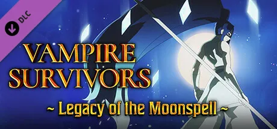
- Legacy of the Moonspell(문스펠의 유산) - 2022년 12월 15일 출시
첫 유료 DLC($1.99)로, 8개의 캐릭터, 13개의 무기, 1개의 스테이지, 6개의 음악이 추가된다.- PC - 2022년 12월 16일 출시. 금액 2,000원
- 안드로이드 판 - 2023년 3월 14일 출시. 금액 2,800원
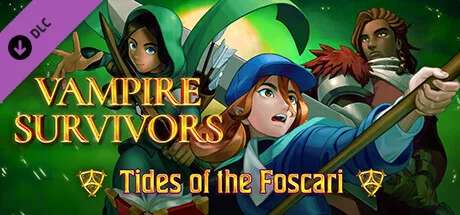
- Tides of the Foscari(포스카리의 물결) - 2023년 4월 14일 출시
8개의 캐릭터, 13개의 무기, 1개의 스테이지, 7개의 음악, 21개의 업적이 추가된다. 정통 판타지 컨셉의 dlc로, 마법사, 전사, 궁수로 대표되는 세 캐릭터가 숲의 비밀을 파헤치는 전개로 이루어져 있다.- PC - 2023년 4월 13일 출시. 금액 2,000원
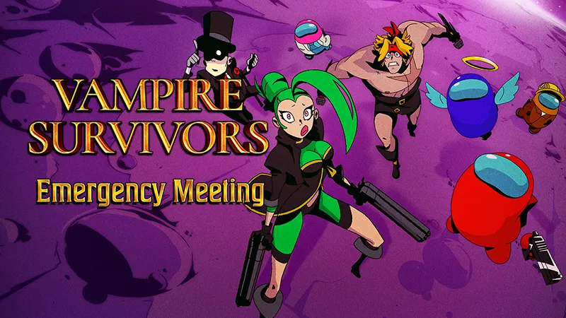
- Emergency Meeting(긴급 회의) - 2023년 12월 19일 출시, 금액 2,500원
인디게임 역주행 신화를 써내렸던 어몽어스와의 콜라보 DLC로 신규 맵 1개 15개의 무기, 신규 모험 모드, 20개의 업적이 추가된다. 출시 트레일러에서 젠나로 벨파에제[22], 푸냘라 프로볼라[23], 암브로조 경[24]이 디렉터와 결투하던 도중 디렉터가 이들을 다른 세상으로 보내버리면서 콜라보가 이루어진다는 스토리를 보여주는데 기존의 도트 모습이 아닌 애니메이션 버전의 캐릭터들을 볼 수 있다. 이후 나오는 콜라보도 이것과 비슷하게 약간의 스토리가 나오며 도트가 아닌 캐릭터들의 모습을 볼 수 있다. 스팀 도전 과제는 추가되지 않았다.
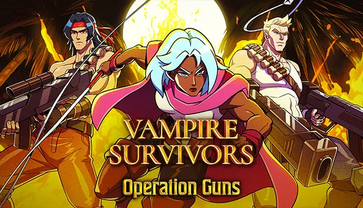
- Operation Guns(작전 총기) - 2024년 5월 9일 출시, 금액 2,500원
코나미의 콘트라 시리즈와의 콜라보 DLC로 맵 3종과 10명의 캐릭터, 22종의 신규 무기, 콘트라 관련 음악 19개가 제공되며, 갈루가 맵에서 콘트라 스피리츠 기반 적이 다수 등장하고, 전용 최종 보스로 대각 로봇 빅 퍼즈가 등장한다. 악마성 스프라이트 도용으로 코나미와 관계가 좋지 않을 것이라 생각했는데 반대로 관련 콜라보가 나왔다는 소식에 놀랍다는 반응. 스팀 도전 과제는 추가되지 않았다.
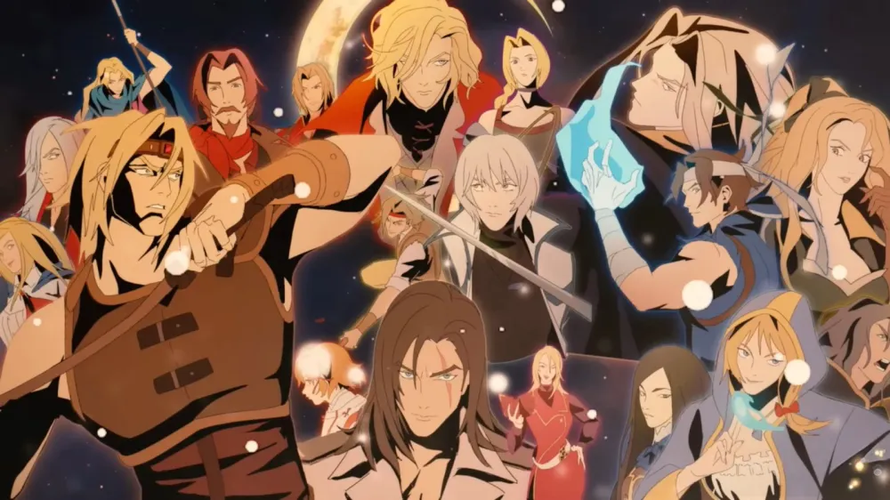
- Ode to Castlevania(캐슬바니아에 바치는 송가) - 2024년 10월 31일 출시, 금액 4,000원 (3.99$)
코나미의 악마성 시리즈와의 콜라보 이면서 대규모 DLC로 20명 이상의 캐릭터, 기본 버전과 진화 상태를 포함한 신규 무기 40종 이상, 하나의 거대한 스테이지, 30곡이 넘는 뮤직 커버 등이 추가된다. 단 콘트라와 마찬가지로 리믹스곡은 OST에 등록되지 않은 상태(유튜브에는 업로드)다. DLC 공개 후 실제로 추가된 캐릭터가 무려 81명에 달하는 데다 엄청난 볼륨과 원작 악마성 시리즈의 숭배에 가까운 리스펙트들과 재현도로 인해 뱀서 2라는 칭찬과 더불어 압도적으로 좋은 평가를 받고 있다. 이것으로는 부족했는지 1.14 버전에 16명의 악마성 계열 캐릭터가 추가로 등장할 것이라고 예고하여 총 97명이 등장하는 압도적인 볼륨을 지닌 확장팩이 되었다. 스팀 도전 과제는 추가되지 않았다.
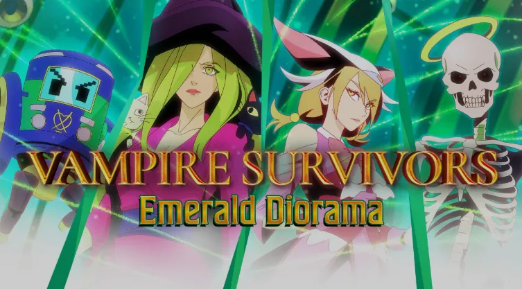
- Emerald Diorama(에메랄드 디오라마) - 2025년 4월 11일 출시, 무료 DLC
스퀘어 에닉스의 사가 시리즈 중 하나인 사가 에메랄드 비욘드와의 콜라보 DLC로 맵 1종과 12명의 캐릭터, 40종의 신규 무기가 등장한다.
스토리 영상이 살짝 골 때리는데 여타 DLC처럼 소개하려는 듯싶더니 갑자기 오늘은 이딴거 할 기분이 아니라면서 게임이나 하겠다고 하고는 집에서 게임을 하는 디렉터의 모습을 보여준다. 그러고는 신작인 사가 에메랄드 비욘드를 택배로 받고는 게임을 하다가 갑자기 뭔가 좋은 생각이 난 듯이 손을 뻗어서 아메이야를 잡아채고는[25] 그대로 뱀서 게임 속으로 던져넣는다. 그 후 지오반나와 모르타치오가 그 둘을 만나는 게 내용. 원작의 특이한 시스템을 잘 다듬어 재현했지만, 캐릭터 및 무기 이름은 영문판 명칭을 따르고 있다.
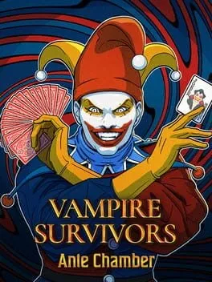
- Ante Chamber(안테 챔버) - 2025년 10월 29일 출시, 무료 DLC
Balatro와의 콜라보 DLC로 4종의 신규 캐릭터, 8종의 신규 무기가 나온다.
PV 내용은 굉장히 짧은 편으로 짐보가 저게 무슨 냄새냐며 묻더니 포 랏초가 옆에서 걸어오고, 그걸 보더니 또 콜라보냐며 묻는 게 끝이다.
- Legacy of the Bloodmoon(붉은 달의 유산) - 2026년 8월 28일 출시
포스카리의 물결 이후로 오랜만에 공개된 오리지널 DLC. 원래는 '문스펠의 유산'의 업데이트로 개발했으나 점점 규모가 커지면서 독자적인 DLC가 됐다고 한다. 때문에 문스펠의 유산과 같은 세계관을 공유한다. 신규 캐릭터 12명, 신규 무기 16종 이상이 추가되었다.
8. 결말
모든 유물을 얻고 에우다니모니아 M.으로 들어가면 디렉터가 거꾸로 적힌 알 수 없는 말을 한다. 확인?을 누르면 이야기는 이쯤 하고 슬슬 싸우자며 결투를 신청한다. 디렉터의 공세를 버티고 그를 만족시키면[26] 수많은 디렉터의 손들이 갈채를 보내면서 20만가량의 골드를 받고 화면이 암전되는데...
축하하네, (캐릭터 이름)! 여기엔 뱀파이어가 없지. 내 손을 잡는다면, 다른 세상에서 찾아 볼 수 있을지도 모르지만...
세상의 가장자리까지 갔지만 뱀파이어는 찾지 못한다. 이 게임의 원흉인 비스콘테 드라쿨로는 끝내 맥거핀으로 남게 되었다.
또한 2024년 10월 캐슬배니아에 바치는 찬송가 DLC에서는 또 다른 엔딩이 등장하는데, 내용은 다음과 같다.
캐슬바니아에 바치는 찬송가 DLC 엔딩 {펼치기 * 접기}
캐슬배니아에 바치는 찬송가 DLC 엔딩[27]
리히터 벨몬드 캐릭터로[28] 1시 방향의 왕좌의 방으로 진입 시, 입구에 들어서는 순간 모든 적이 즉사하고 타이머가 멈춘다.
그 후 리히터가[29] 드라큘라 블라드 체페슈[30]에게 접근하고 그 유명한Die monster!(죽어, 괴물아!)로 시작하려는 순간, 갑자기 드라큘라는 그만하라면서 도대체 이 짓을 몇 번이냐 반복해야 하냐며, 파괴를 일삼는 너와 네 족속들은 언제나 불쑥 나타나서는 성의 벽과 촛불을 전부 부수고 가둔 악마들도 모조리 처단해 버리니 와인 한 잔도 마음 편히 마실 수가 없다며 와인을 던져버리고는 "사실 나도 이 세상에 속해 있다는 것을 보여주겠다!" 라고 하더니 디렉터에게 "...좀 도와주겠어?"[31] 라고 말하고는 디렉터의 손짓 한 번에 그가 관에 들어가게 되고, 그 후 플레이어가 관을 열면 드라큘라 캐릭터가 해금된다.[32]
그런데 갑자기 사신이 끼어들어서 이 비극은 뭐냐, 드라큘라는 세상의 죽음을 가져오는 존재지, 재미 삼아서 개같은 십자군 따위에 참여하는 존재가 아니라며 이딴 조롱은 용납할 수 없다면서 이 세계를 직접 지우겠다고 으름장을 놓고는 거대한 모습으로 등장한다.
거대한 낫으로 리히터의 무기를 전부 썰어버리고, 낫으로 원킬을 내버리자 디렉터가 나타나 무한 부활로 지원해 준다. 그러나 리히터가 거대한 낫에 속수무책으로 계속 당하니까 아예 손으로 거대한 낫을 막으려 하는데, 힘겨루기에 밀려서 가면과 손이 파괴되고 소멸하게 된다. 디렉터의 소멸의 여파로 게임이 파괴되고 정적만 남지만, 리히터는 계속 버티면서 디렉터의 파편을 모아 게임을 복구하고 이내 블랙의 측면까지 회수한다. 블랙의 측면이 부서지며 블랙 디스크가 나오고[33], 레온 벨몬드를 시작으로 기본 악마성 콜라보 DLC 캐릭터 20종이 등장해 사신을 공격하는 것을 도와주기 시작하며, 율리우스 벨몬드 이후로는 기존 뱀파이어 서바이버즈의 캐릭터들인 안토니오, 이멜다, 파스콸리나, 젠나로, 지아순타도 합류하더니 그 후 아르카, 포르타, 라마, 포, 크로치, 클레리씨, 크리스틴, 돔마리오, 지오반나, 콘체타, 포페아, 푸냘라, 모르타치오, 야타 카발로, 오 솔레미오, 비앙카 람바도 전투에 끼어들어 리히터를 돕고, 마지막으로 드라큘라까지 합세하고는 곧 사신이 죽으면서 모든 캐릭터가 안전하게 탈출하고 엔딩 스크롤이 올라간다.[34]
엔딩 스크롤이 전부 올라간 이후 차원을 이동하는 모습과 함께 디렉터의 손이 나와 손가락을 튕겨서 플레이어가 앞으로 해금할 수 있게 되는 더 많은 악마성 콜라보 DLC 캐릭터들을 맛보기 예고편 형식으로 보여준 뒤, 캐릭터 선택창으로 돌아와 2부 캐릭터들이 선택창에 하나씩 활성화되고는 마지막으로 해금된 드라큘라 블라드 체페슈는 쿠르스 소마 캐릭터 옆칸에 놓이는 것으로 결말이 난다.[35]
그러나 여전히 뱀파이어가 이 세계엔 없고 다른 관에 있다는 소리가 나오는 걸 보면 결국 뱀파이어는 이 게임에 등장하지 않을 모양이다.
9. 평가
[ 펼치기 · 접기 ]
|
88 | 98% | 80 | |
종합 평가 | 최근 평가 |
매우 단순한 그래픽임에도 탄탄한 게임성과 엄청난 중독성을 바탕으로 스팀 유저 평가에서 '압도적으로 긍정적' 이라는 호평을 받았다.
사실 첫 출시 자체는 2021년 3월이나 첫 출시 버전은 데모 버전에 가까운 데다가 웹 플랫폼이라 인지도가 떨어졌지만, 2021년 12월경 스팀에 출시된 후 2022년 1월부터 인터넷 방송에서 스트리머들이 플레이하기 시작한 것을 기점으로 큰 인기를 끌었다.
30분 제한의 생존 플레이라는 심플한 목적 + 오직 방향 전환만 사용하는 조작성의 단순함이 주는 중독성이 강하다. 레벨업 때마다 해금되는 아이템의 종류가 완전 랜덤이기 때문에 플레이 때마다 무기 조합을 달리 해서 매번 다른 캐릭터를 키워낼 수도 있다. 또한 저렴한 가격으로 진입장벽이 낮은 것도 인기의 비결로 꼽힌다.
단순한 게임 방식과 간단한 조작감 덕분에 만들기도 편해서인지, 마치 슬더스라이크가 그랬던 것처럼 일명 "뱀서라이크"라는 신조어를 만들어낼 정도로 수많은 아류작들이 출시되었다. 특히 모바일 시장에서 뱀파이어 서바이버즈 류의 장르가 상당히 흥하는 중이다. 게임 개발자와 플레이어들 양쪽에 신선한 충격을 안겨준 작품으로, 2022년 중반을 기점으로 뱀서라이크 게임들이 우후죽순 쏟아져 나오고 있다. 해외에서는 Games Like Vampire Survivors, Survivors-Like, Reverse Bullet Hell Games(역탄막게임) 등으로 불린다.
사실 첫 출시 자체는 2021년 3월이나 첫 출시 버전은 데모 버전에 가까운 데다가 웹 플랫폼이라 인지도가 떨어졌지만, 2021년 12월경 스팀에 출시된 후 2022년 1월부터 인터넷 방송에서 스트리머들이 플레이하기 시작한 것을 기점으로 큰 인기를 끌었다.
30분 제한의 생존 플레이라는 심플한 목적 + 오직 방향 전환만 사용하는 조작성의 단순함이 주는 중독성이 강하다. 레벨업 때마다 해금되는 아이템의 종류가 완전 랜덤이기 때문에 플레이 때마다 무기 조합을 달리 해서 매번 다른 캐릭터를 키워낼 수도 있다. 또한 저렴한 가격으로 진입장벽이 낮은 것도 인기의 비결로 꼽힌다.
단순한 게임 방식과 간단한 조작감 덕분에 만들기도 편해서인지, 마치 슬더스라이크가 그랬던 것처럼 일명 "뱀서라이크"라는 신조어를 만들어낼 정도로 수많은 아류작들이 출시되었다. 특히 모바일 시장에서 뱀파이어 서바이버즈 류의 장르가 상당히 흥하는 중이다. 게임 개발자와 플레이어들 양쪽에 신선한 충격을 안겨준 작품으로, 2022년 중반을 기점으로 뱀서라이크 게임들이 우후죽순 쏟아져 나오고 있다. 해외에서는 Games Like Vampire Survivors, Survivors-Like, Reverse Bullet Hell Games(역탄막게임) 등으로 불린다.
10. 도용·표절 논란
악마성 시리즈 스프라이트 도용 논란
과거 구버전 당시에는 악마성 시리즈, 특히 월하의 야상곡에 쓰인 스프라이트를 색만 바꿔서 거의 그대로 사용했었다. 악마성 시리즈 팬이라면 이미 위의 캐릭터, 아이콘 이미지에서 익숙함을 느꼈을 텐데 그만큼 재사용한 이미지는 말 그대로 손도 거의 안 대고 그대로 가져다 쓴 게 문제였던 것. 몇 가지 예시를 들자면 레거시 그래픽 아르카와 포르타는 주인공인 알루카드의 스프라이트를 트레이싱했으며, 2번째 맵인 화려한 도서관에서는 2가지 형태의 올록이 둘 다 보스로 등장했었다. 아이템 스프라이트도 월하를 그대로 가져온게 많았다. 그리고 주인공 안토니오도 악마성 아케이드판에 등장하는 시몬 벨몬드의 스프라이트를 트레이싱했다. 이는 명백하게 표절에 해당되는 도용 행위이며, 본 게임이 유료 판매 타이틀인 만큼 악마성 시리즈의 저작권을 가진 코나미가 충분히 문제를 제기할 수 있는 사항이었고, 실제로 후술하듯이 코나미가 태클을 걸기도 했었다.
스프라이트 도용 외에도 게임 분위기 자체가 악마성 시리즈의 영향을 매우 강하게 받아 나오는 등장인물, 무기[36], 크리처 모두 악마성 시리즈의 향이 강하게 묻어난다. 개발자 본인도 악마성 시리즈의 35주년을 기념하거나 코나미 커맨드를 인게임에 넣는 등 이 게임이 악마성 시리즈의 영향을 받은 작품이라는 것을 부정하지 않으며, Mad Forest, Unholy Vespers, Ebony Wings 같은 덜 유명한 OST 제목까지 가져오는 등 악마성 시리즈의 팬임을 공공연하게 드러내고 있다.
악마성 시리즈의 각종 요소를 오마주한 것 자체는 문제시되는 행동은 아니다. 그러나 게임 시스템이나 오마주를 넘어선 스프라이트 도용은 명백하게 문제가 있으며, 게임이 인기를 끌어 코나미의 눈에 띄게 되는 순간 게임이 판매 정지되거나 스프라이트가 전면 교체될 것이 거의 기정 사실로 여겨지고 있었다.[37]
악마성 시리즈의 각종 요소를 오마주한 것 자체는 문제시되는 행동은 아니다. 그러나 게임 시스템이나 오마주를 넘어선 스프라이트 도용은 명백하게 문제가 있으며, 게임이 인기를 끌어 코나미의 눈에 띄게 되는 순간 게임이 판매 정지되거나 스프라이트가 전면 교체될 것이 거의 기정 사실로 여겨지고 있었다.[37]
결국 개발자가 문제를 인지했는지 v0.2.10 버전을 시작으로 일부 스프라이트가 수정되기 시작했으며 그 이후로도 적극적으로 패치를 하면서 도용한 스프라이트들 대부분이 오리지널 스프라이트로 변경되었다. 물론 뒤늦게 수정했다고 해서 이미 도용을 했다는 과거가 사라지는 것은 아니다.
매직 서바이벌과의 유사성
게임 시스템이 모바일 게임 매직 서바이벌(2019)과 매우 유사하여 표절논란이 일어났다. 이에 대해선 0.2.10 패치노트에서 매직 서바이벌으로부터 영감을 얻었다고 개발자가 직접 언급했으며, 이후 빈번한 업데이트를 진행하면서 장르적 유사성은 있을지언정 온갖 콘텐츠를 추가하여 점차 확실하게 매서와는 차별화되는 독창성을 확립해냈다. 정식 출시 시점으로는 매직 서바이벌을 모티브로 한 같은 장르의 게임 정도로 이지 표절이라고 힘드며, 해당 제작자도 딱히 문제를 삼은 적이 없기에 논란은 종결되었다.
- 베요네타 일러스트 트레이싱 논란
본 문서의 최상단 및 스팀 스토어에 올라와 있는 게임 표지의 여성 마법사(이멜다) 구도가 베요네타 2와 유사하다. 베요네타 2와 뱀서의 표지를 겹쳐보면 매우 비슷한 수준으로 윤곽선이 동일한 부분이 많다.#1 #2 한국뿐만 아니라 해외에서도 트레이싱 의혹은 끊임없이 제기되고 있으며, 부분 트레이싱 후 디자인만 살짝 변경했다고 주장하는 사람들과 단순한 구도의 유사성으로 보는 의견이 상충하고 있다.#1 #2 #3 #4 #5 #6 #7 #8 이후 뱀서에 베요네타를 패러디한 캐릭터인 푸냘라 프로볼라와 권총 무기들이 업데이트되면서 제작자의 의도는 베요네타 시리즈에 대한 오마주였던 것으로 보이지만 오마주와 표절은 그 경계가 불분명하기에 여전히 논란은 많다.
표지가 과연 트레이싱인가 아닌가에 관한 논란하고는 별개로 "애초에 대체 왜 베요네타를 인용한 일러스트를 게임의 표지로 사용했는가?"에 대해서도 왈가왈부가 많다. 이는 트레이싱이니 뭐니 하는 논란이 생긴 근본적인 원인이라고도 할 수 있는데, 게임의 인상을 결정짓는 스팀 스토어의 표지로 이 작품과는 전혀 상관도 없던 게임의 일러스트를 인용한 이미지를 사용한 것을 유저들이 납득할 수 없었기 때문이다. 메트로이드 시리즈풍의 표지가 사용되면 메트로배니아라는 기대감을 품고, 마리오 시리즈풍의 표지가 사용되면 플랫폼 게임이라는 기대감을 품듯이, 베요네타풍의 표지가 사용되었다면 베요네타와 무언가 연관이 있는 게임이어야 할 텐데 베요네타하고는 전혀 관련 없는 게임이 베요네타풍의 표지를 사용한 의도를 모르겠다는 의견이 많으며, 트레이싱이 아닌 것으로 주장하는 쪽도 이에 대해서는 동의하는 편이다.
다만 고작 동작에만 유사한 디자인 요소가 저작권 침해 인정될 가능성은 0%에 수렴하는 수준이고, 저작권자인 플래티넘 게임즈에서도 딱히 문제 삼지는 않으며 법적인 문제는 전혀 없다고 평가받는다. 반면 베요네타의 동작을 그대로 따라 한 이유가 무엇인지 오피셜도 없고 동작에 확실한 의도가 있었기에 도의적인 표절 문제는 여전히 존재한다고 평가받는다.
11. 기타
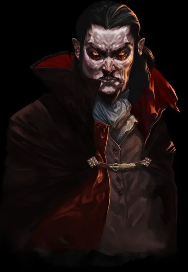
- 게임 이름은 '뱀파이어' 서바이버즈에 드라큘라와 비슷하게 생긴 뱀파이어가 타이틀 일러스트에도 존재하고 대부분의 공지나 이벤트에서도 이 캐릭터가 계속해서 등장하지만, 정작 게임 내에서는 드라큘라나 뱀파이어가 전혀 등장하지 않는다.[38] 관에서 언락하는 신캐릭터들이 뱀파이어는 다른 관에 있다고 하지만 최종보스 업데이트가 나온 현재의 게임 본편의 스토리를 보면 그냥 제목엔 뱀파이어가 있지만 뱀파이어는 끝까지 안 나오고 다른 악당을 해치우는 넌센스 개그로 웃기는 게임이 컨셉인 듯하다. 결국 최종보스 업데이트가 완료된 후에도 마스코트격으로 등장하는 저 뱀파이어가 도대체 누구인지, 뭘하는 인물인지는 계속 밝혀지지 않고 있다. 심지어 후속 작품인 Vampire Crawlers에서도 거의 동일한 뱀파이어 캐릭터가 나온다. 어쩌면 이 게임 세계관 특성상 디렉터가 더 중요한 적이겠지만.
- 제작자가 이탈리아인이어서인지 이탈리아 국가색이 짙게 묻어난다. 게임의 배경도 이탈리아이며, 캐릭터 이름과 아이템 이름 또한 이탈리아어가 많다.
- 코나미에서 악마성 35주년 기념 NFT를 출시하자 거기 맞춰서 같이 35주일 기념 공지를 올렸다.
- 게임을 스트리밍할 경우 송출 비트레이트 제한 때문에 게임 후반부에 몬스터가 너무 많아지면 사정없이 화질이 깨지는 모습을 볼 수 있다. 이유는 음악 방송 LED 테러 문서 참고. 대미지 표시를 끄면 표시할 오브젝트가 크게 줄어들기 때문에 플레이어 입장에서는 프레임 방어에 조금 도움이 되고, 방송을 보는 입장에서도 화면 전환 속도가 조금이라도 줄어들어 그나마 덜 깨지게 된다.
- 2022년 9월 21일 오후 11시(BST)부터 가격이 기존 3,300원($2.99)에서 5,000원($4.99)으로 인상되었다.
- 출시 당일 Xbox Game Pass에 게임이 등록되었다. 발매 첫날부터 콘솔, PC, 클라우드에서 플레이가 가능하다. 2023년 12월경 갑자기 한국 스토어에서 사라졌으며, 2024년 1월 말쯤 다시 스토어에 등장했으나 DLC 구매가 불가능해졌다. 한국 마이크로소프트 고객센터에서는 심의 문제라고 하지만, 게임심의에는 테슬라 측에서 12세로 받은 내용이 존재하며, 자체 심의가 가능한 마이크로소프트가 애당초 그런 문제가 생길 일이 없기 때문에 말이 안 되는 변명을 남겼다.
- 모바일 버전은 게임 후 결과 창 아래(완료 버튼 위)에 '보너스 골드 동영상 시청'이라는 초록 버튼을 보여준다.
- 2023년 8월 영국에서는 <뱀파이어 서바이버즈>의 협동 모드 공개 체험 이벤트에 참석한 게임 기자 '로라 케이트 데일'은 자신의 SNS를 통해 새로운 버전의 <뱀파이어 서바이버즈>를 체험할 기회를 가졌다고 전했다. 이 버전의 게임은 현재 존재하는 버전들과 큰 차이가 있으며, 새로운 스테이지, 무기, 액세서리 및 진화가 포함되었다. 더불어 새로운 캐릭터로 '다리가 여러 개인 천사', '장미 여인', '꼬마 도깨비', '산타', '늑대 인간', '우주인', '큰 해골', '별자리 개구리 천사', '날개 달린 달걀'이 있었다고 한다. #
- 1.6 업데이트 이후 PC/콘솔판은 물론 모바일까지 최대 4인 협력플레이를 지원한다. 또한 PC(Steam)판 한정으로 리모트 플레이 투게더 기능을 지원하기에 원격으로 멀티 플레이도 가능하다.
- 2023년 11월 21일 월드 오브 워크래프트: 용군단 10.2.5 패치 내 장면 스크립트 데이터베이스(Scenescript.db)에서 인디 로그라이트 슈터 게임인 '뱀파이어 서바이버'의 이름이 언급되는 두 개의 신규 데이터가 발견되었다.
- v1.9.100 퍼블릭 베타(2024년 1월)에서, 신규 무기 Phas3r은 뱀서가 맨 처음에 만들어진 엔진(정확히는 자바스크립트 프레임워크)인 페이저를 모티브로 한 무기이다. 진화무기 포톤 스톰은 페이저 개발사의 이름이다. 신 캐릭터 '스페이스 듀드는 페이저 프레임워크 홈페이지에 그려져 있는 캐릭터이다.
- 2025년 4월 1일에 Rusty's Retirement와 콜러보레이션을 발표했다. 러스티 리타이어먼트에서 뱀서 모드가 제작되었다. 뱀서의 인물들 및 박쥐들이 농장에 출현한다.
- 발매 초기 한국에서는 게임의 제목을 '뱀파이어 서바이벌'이라고 잘못 부르는 경우가 매우 많았으며, 이름을 잘못 부르는 수많은 사람들과 명칭을 고쳐 주려는 사람들 사이에 키보드 배틀이 일어났고, 심지어 맞는 이름을 인지하고도 일부러 고집을 부리며 서바이벌이라고 부르겠다는 사람들이 다수 있었다. 발매 후 시간이 많이 흐른 지금은 정식 명칭인 '뱀파이어 서바이버즈'로 정리되었고 논쟁은 줄어들었다.
12. 외부 링크
[1] Xbox 휴대 장치 최적화 인증 통과 - 호환성 단계 '완벽'[2] Xbox Play Anywhere 지원 및 Xbox Game Pass 포함[3] 앞서 해보기는 다음과 같다.
[4] v1.6 업데이트와 함께 엔진이 변경되었다. 구 Phaser. 엔진은 이제 공식적으로 지원되지 않으나 비공식으로 제공된다고 밝혔다.#[5] 모바일 또한 로컬 멀티 플레이를 지원하기에 멀티 플레이를 할 경우 태블릿이나 휴대용 모니터 혹은 TV 화면을 통해 화면미러링을 권장한다.[6] 본명은 루카 갈란테(Luca Galante)라는 이탈리아계 남성. 추후 영국에서 poncle이라는 회사를 설립[7] 한국은 10월 21일[8] 이 장르의 기틀이 되는 게임은 아니나, 최초로 흥행에 성공시켜 대부분의 사람들에게는 뱀서라이크로 알려져 있다.[9] poncle 서버에 세이브 정보를 저장, 로드하는 방식이다.[10] 스팀판에서 DLC를 구매하고 세이브 데이터를 서버에 저장해도 모바일판에서는 DLC 캐릭터와 아이템, 스테이지를 사용할 수 없다. 모바일에서 그 DLC를 또 구매해야 사용할 수 있다.[11] 자바스크립트는 싱글스레드 기반이며 멀티코어를 사용할 수 있는 방법이 있긴 하나 제한적이라 게임에서 사용하기 쉽지 않다. 즉 게임 자체는 브라우저 엔진 위에서 구동되며 게임 디렉토리에 들어가보면 크로미엄 기반임을 알 수 있다.[12] 원문에도 이렇게 되어 있으며, 배경년도가 21세기 현대이다.[13] 단어 그대로 뜻을 풀이하면 '아름다운 나라'라는 뜻이지만, 성직자 안토니오 스토파니의 작품에서 이름을 따온 벨파에제(세) 치즈가 따로 존재한다. 메인 캐릭터의 이름이 하필 안토니오인 것과 무관치 않아 보인다.[14] 표준 이탈리아어에서 's'의 발음은 어두에서 유성자음과 함께 있을 때, 혹은 모음과 모음 사이에 있을 때 유성음 /z/로 실현된다. 참고[15] 원문: The year 2021, Rural Italy, there lived an evil person named Bisconte Draculó, whose many evil magics created a bad world filled with famine and suffering. It's now up to the members of the Belpaese family to end his reign of terror and return good food to the table.[오역] 적의 스폰이 랭크당 시간의 3%(최대 15%) 동안은 피해를 줄 수 없습니다로 게임 내에서 오역되어 있다.[17] 아이콘 모양은 이탈리아 사람들이 많이 쓰는 부정적인 제스처를 표현한 것으로 보인다. 대화 중에 내용이 터무니없다는 정도의 이유로 짜증났을 때 이탈리아 사람들은 모든 손가락 끝을 위로 모아 손을 추켜 세운 다음 앞뒤로 흔드는 모션을 취하는데 (1. Finger Purse를 보라) , 이와 비슷한 모양이다. 이외엔 월하의 야상곡에서 나온 비부티의 아이콘이 가루를 집어 뿌리는 손 모양을 하고 있는데, 이를 뒤집은 것처럼 보이기도 한다.[18] 인게임에서는 "광원에서 획득합니다." 라고 되어 있으나 오역이다.[19] 화려한 도서관 맵에서 시작 즉시 달려드는 자폭 유령을 무슨 수를 써도 떨처낼 수가 없다. 이 경우 보석을 얻고 바로 우하단으로 계속 달리면 자폭 대미지를 피할 수 있다. 비비기 대미지는 별거 아니므로 초반이 그나마 버틸만해진다.[20] 경험치 보석, 골드, 복제 무기, 반지, 메탈리오, 유물 아이템. 문구는 뜨지 않지만 특정한 아르카나를 봉인하는 것도 안된다.[21] 가지고 있는 기회와 합쳐 20개가 될 때까지 구매가 가능하며, 20개를 초과한 상태라면 1개만 구매할 수 있다.[22] 도트와 비슷한 스타일로 상체가 거대한 근육 돼지로 그려졌다.[23] 어째서인지 레거시 스프라이트를 기준으로 그려졌다. 비슷하게 레거시가 기본 모델인 콘체타 카치오타와 크리스틴 다베인은 캐슬배니아 PV에선 레거시가 아닌 새 스프라이트 기준으로 그려졌다. 정작 푸냘라 본인은 그 PV에서 코빼기도 나오지 않는다.[24] 잡동사니를 쏟아붓는 정신없는 무기와 같이 개성 있는 캐릭터로 컨셉을 잡아 유저들이 호평하고 있다. 깨알같이 어몽어스의 크루원들과 마주쳤을 때 경계하는 다른 두 캐릭터와는 달리 중절모를 들어 인사를 하고 있다.[25] 이 과정에서 디바 No.5도 같이 잡힌 듯하며 아메이야와 함께 떨어진다.[26] 우화집에 들어가서 디렉터의 정보를 확인하면 체력이 -1에 묵주 저항이 있다. 즉, 완전무적으로 쓰러트리는 것 자체가 불가능하다. 그는 단지 플레이어를 가지고 논 것이다. 게다가 이 보스전은 디렉터를 공격하는 게 목표가 아니라 디렉터 근처를 회전하는 물체들을 파괴하는 것이 목표이다. 사실 곳곳에 디렉터의 손이 나와서 플레이어의 아이템, 황금알 등의 각종 시스템 등을 손짓 한방에 전부 해제시키고, 디렉터와의 보스전 중에는 정상적으로 스폰될 수 없는 화이트 핸드조차 디렉터는 그것을 마치 장난감을 다루듯이 그냥 손으로 집어서 가져오는 행위를 보이고, 심지어 죽어도 디렉터의 손뼉 한 방에 강제로 부활한다. 즉, 플레이어는 디렉터의 손짓 한방에 언제든지 죽고 언제든지 부활할 수 있으며 게임 시스템 조작도 그에겐 별 일이 아니란 뜻이다.[27] 엔딩 시작은 17분 30초[28] 리히터를 제외한 다른 캐릭터로 접근해 봤자 아무 일도 일어나지 않는다. 현재 플레이하는 캐릭터가 무조건 리히터여야만 한다.[29] 성우는 조성원. 이후에 등장하는 사신과 중복이다.[30] 성우는 닐 뉴본.[31] 한국어 번역에선 "도와드릴까?" 라고 번역됐는데 오역이다. 디렉터에게 자기 좀 도와달라고 하는 것이기 때문.[32] 깨알같이 이때는 드라큘라가 직접 "고마워, 리히터 벨몬드. 하지만 뱀파이어는 다른 관에 있다고! 하하하!" 라는 음성이 나오며, 해금 음악이 나오는 순간 드라큘라가 "나도 뱀파이어 서바이버즈에 참여하게 됐다!" 라며 환호한다.[33] 참고로 여기서 나오는 경고 메세지와 음악은 월하의 야상곡 PS1 CD를 CD 플레이어에 넣었을 때 나오는 음악을 완전히 그대로 가져왔다. 월하의 야상곡 항목 참고.[34] 이전 DLC와는 완전 다른데 이전 DLC들은 캐릭터와 스테이지만 추가되었으며 따로 클리어 엔딩이 없던 반면 이번 DLC는 전용 스크롤이 올라가며 악마성이 무너지는 장면까지 나온다.[35] 쿠르스 소마의 정체를 생각해 보면 엄청나게 적절하기 짝이 없는 캐릭터 배치이다.[36] 기본무기인 채찍은 물론이고 단검, 성수, 성경, 십자가, 도끼, 뼈 등은 악마성시리즈 단골 서브웨폰들이며 그 작동방식 또한 매우 유사하다.[37] 현재 코나미의 눈에 띄었으나 묵인되고 있는 게임은 무료 리듬게임 시뮬레이터인 Be-Music Script가 사실상 유일하다. 게다가 이쪽도 이미 1990년대에 한 차례 저작권 문제로 배포가 중지되는 등 철퇴를 맞았던 전적이 있고, 이후로 자체적인 유저들끼리 창작곡을 만들어 살아남은 거지 BEMANI 본가 악곡을 대놓고 가져오는 행위는 허용되지 않는다.[38] 화려한 도서관의 보스였던 네스페리트의 원본 모델인 올록이 원작 악마성 시리즈에서 뱀파이어이기는 했다.[39] Vampire Survivors/resources/app/.webpack/renderer 경로 내의 main.bundle.js 파일을 열어 내부 수치를 조작하면 된다. 수치는 16진수로 이루어져 있어 16진수에 대응해서 수정해야 한다. 빌드 파일의 특성상 줄바꿈이 사람이 알아보기 어렵게 되어 있어 원하는 부분을 찾기 어려울 수 있는데, 자바 스크립트 코드 등을 보기 편하게 바꾸어주는 뷰어 사이트나 프로그램 등으로 열어서 확인하면 된다.[40] Vampire Survivors/resources/app/.webpack/renderer/assets/img 경로 내에 있는 png 파일과 json 파일을 수정하면 된다.[41] 데모 웹 버전은 스팀판에서 일부 콘텐츠(7가지 캐릭터, 22가지 무기, 12가지 강화, 10가지 아이템, 23가지 도전과제, 1개 스테이지, 마우스, 터치, 컨트롤러, 키보드 지원)만 플레이 가능하며 정기적인 콘텐츠 업데이트가 없다.[42] 다만 유저 번역을 공식적으로 수용했던 앞서 해보기 시기와 달리, 정식 출시 후의 자체 번역은 오역이 매우 많다.[43] 단 5번째 DLC 악마성 시리즈 콜라보는 여기에 없다.
itch.io | 2021년 3월 31일 |
Steam | 2021년 12월 17일 |
Game Pass | 2022년 5월 19일 |